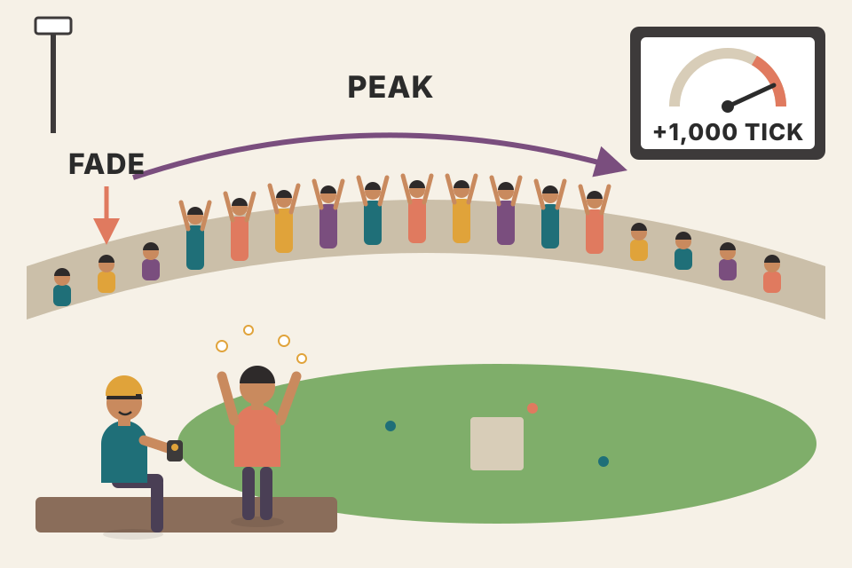
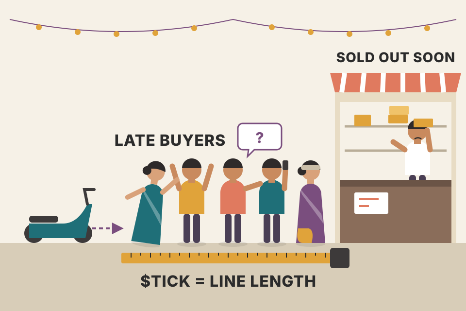
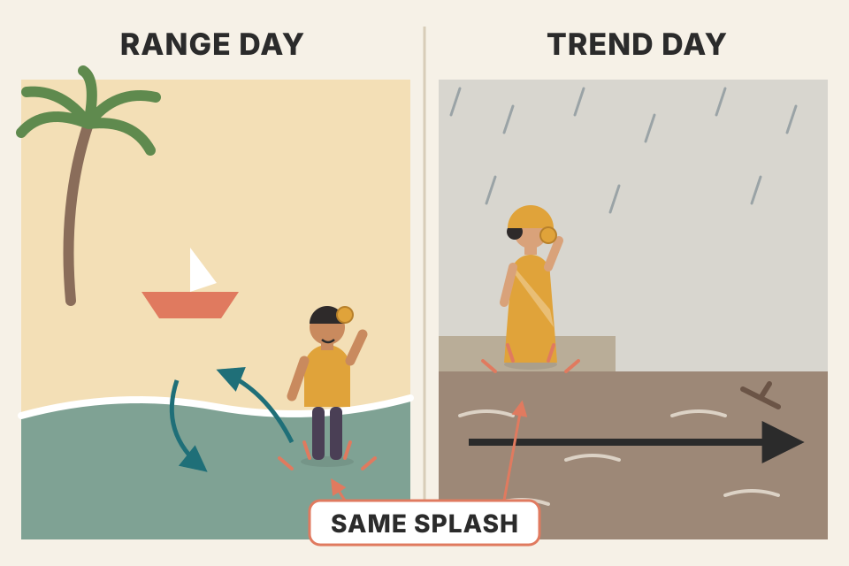
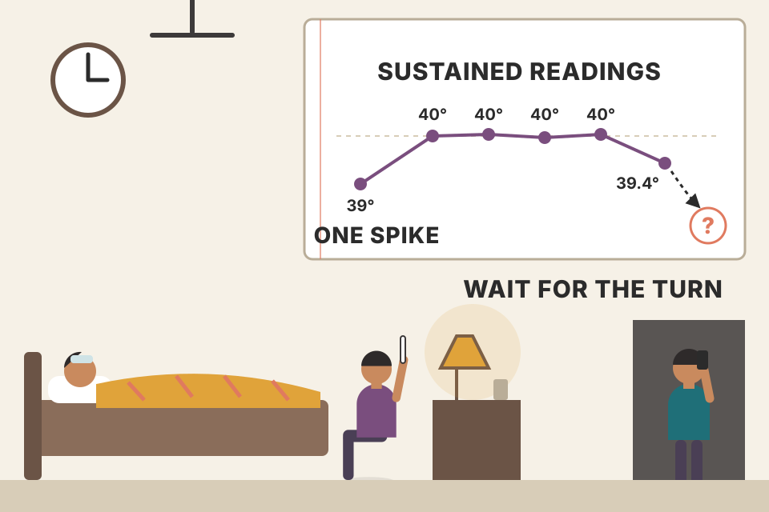

The NYSE $TICK counts, minute by minute, how many stocks last traded up versus down. When it pushes past +1,000 or −1,000, the crowd is buying or selling in a panic. Carter's default play is to take the other side for a small, fixed bracket, with a 35-minute timer. The second half of the chapter covers the days when that is exactly wrong, and how to read the $TICK's trend instead. This page walks the chapter in the book's order: the alert, the seven rules, all ten worked days (28 trades), why it works, how to tell a probe from real selling, the 2010 flash crash, and the 8/21 EMA read.
Every chart uses simulated prices and simulated $TICK readings. Figures 9.1–9.15 are blank in this PDF copy, so each chart is rebuilt from the text. Where a chart replays one of Carter's trades, the entry, stop, target and exit levels are his; the minute-by-minute path between them is simulated, and times marked ≈ are my placement where the book gives none.
One instrument, two opposite ways to use it. In quiet, two-way markets an extreme $TICK reading marks a climax, so you fade it. When big institutions ("the elephants") are moving, extreme readings come one after another, and you trade in their direction instead.
Stock markets spend most of their time backing and filling: drifting up to resistance, drifting back to support, not doing much. For most of that time a trader has nothing to do but wait, and many fail at exactly that. They believe a trader should always be in a trade. Carter calls this one of the biggest misconceptions in trading. There are always three positions: long, short or flat, and for day trading, flat is the best choice about 60 percent of the time. A cat doesn't chase the first bird it sees; it crouches and waits, sometimes for hours. When something real happens, like a buy or sell program hitting the market, the alert trader gets a good scalp. Actively trading really means actively waiting. Overtrading is the number one reason most day traders fail.
The easiest way to wait well is to watch, or rather listen for, the $TICK. Readings above +1,000 or below −1,000 mean extreme buying or selling, and by then most of the bullets have been fired. Amateurs get caught up in the excitement, fear missing a big move, and jump in just as it is running out; they become the bag holders shaken out on the reversal. Carter waits for the extreme reading and fades it with a market order:
He has audio alerts set at those levels, so he doesn't have to stare at charts and can be down the hall. The setup isn't his invention: he was shown several versions by other traders, and people who have traded for decades tie part of their trading to the $TICK. The chapter covers the fades first, then (new material) when and how to "go with" an extreme reading, for example waiting after a +1,000 reading for a pullback to the 0.00 line to buy. He uses "$TICK", "tick" and "ticks" interchangeably; they all mean the same indicator.

A stadium crowd doing a wave. When two-thirds of the stadium is standing at the same moment, the wave is at its peak: everyone who was going to stand up already has. The next thing that happens is people sitting down. A +1,000 $TICK is that moment, counted across the stock exchange.
Model (mine, not the book's): each minute every stock's last trade is an uptick with probability Φ(k·f), where f is a shared market "mood" and k is how strongly stocks follow it. The program slider adds a burst of index buying around 12:50. Set "move together" to 0 and the $TICK barely leaves ±200 however many stocks you count.
Carter defines the $TICK in Chapter 5 (pdf p117): the number of NYSE stocks whose last price change was up, minus the number whose last change was down. If stocks moved independently, the count would hover near zero, because ups and downs cancel (with 3,000 coin flips the spread is only about ±55). Readings near ±1,000 need a large share of the whole exchange to move the same way in the same minute: with 3,000 issues, +1,000 means about 67% upticking. The things that do that are index programs and basket orders, which buy or sell hundreds of stocks at once, plus a crowd piling in after them. That's why an extreme reading is a footprint of size and urgency, and why it tends to be short-lived: a program finishes, and the latecomers who chased it have nobody left to sell to.
order_flow.md §8: the tick rule (price up versus the previous trade = buy). The $TICK is that rule applied to every NYSE stock at once and summed.Carter studied three setups from other traders and adapted them into this "extreme emotion" play. The rules are written for sells; for buys, flip every sign.
A smoke alarm, a kitchen timer and a two-strikes rule. The alarm (the audio alert) tells you when to act; the timer tells you when to give up waiting; two strikes tell you the kitchen is actually on fire today and you should stop treating smoke as a false alarm.
Every rule removes a decision you'd otherwise make while emotional. The exact threshold removes "is +988 close enough?". The bracket removes "should I hold a bit longer?". The timer removes the slow drift where a losing idea sits in your account all afternoon. The two-stops rule and the 85% filter are regime detectors: a fade only works when buying and selling take turns. If the ticks have been above zero for 85% of the morning, or you've been run over twice, someone big is buying all day and the "climax" isn't one.
Contract values: YM moves $5 per point, ES $50 per point. So both brackets risk $150 to make $100 per contract (YM 30 × $5, 20 × $5; ES 3 × $50, 2 × $50). If every trade ended at the stop or the target, you'd need a win rate above 150 ÷ (150 + 100) = 60% to profit before costs. The timer changes this: many trades end in between, with small wins or losses (sections 3–4 show that 11 of Carter's 28 example trades did). On ES, one tick is 0.25 point ($12.50), so even one tick of slippage plus commission each way takes a real slice of a $100 target.
backtest_results_summary.md: on Nifty futures, an intraday momentum edge was "tiny … eaten by ~₹480 charges + slippage per ₹10L trade". A 2-point ES target is the same kind of thin edge; know your costs per trade before copying a small fixed target.All five examples use the September 2004 YM contract. Every trade uses the YM rules: 30-point stop, 20-point target, 35-minute timer. What each day teaches:
A fisherman with lines out and an alarm on each rod. Most of the day he reads. When a bell rings he reels in, rebaits, sets the timer and goes back to his book. He doesn't stand on the dock staring at the water.
| # | Time | Side | Entry | Stop | Target | Exit | Why | Pts |
|---|
Look at how the trades end, not just whether they win. On Sep 10 the market was grinding higher all day: each +1,000 reading was not a climax but part of a steady advance, so the fades went nowhere (timer exits) and the last one was stopped out. That is exactly the pattern rules 6 and 7 try to catch. On Sep 1 and Sep 9 the readings were genuine bursts that faded, so the targets came quickly (8 to 25 minutes).
The ES examples use the 3-point stop, 2-point target and 35-minute timer.
| # | Time | Side | Entry | Stop | Target | Exit | Why | Pts |
|---|
| Market | Trades | Target / timer / stop | Won / lost / flat | Pts from timer exits | Total pts | Per trade | $ per contract |
|---|
Points are computed from the book's fill prices. Dollar values use $5 per YM point and $50 per ES point (beyond the book), before commissions and slippage.
Three things stand out. First, the timer does a lot of the work: 11 of 28 trades end on it, mostly with small results, so the real risk per trade is often far below the full stop. Second, only one hard stop in 28 trades. Third, these are days Carter chose to show; they are illustrations of how the rules behave, not a complete trading record, so they can't tell you the setup's real win rate (my observation, not a claim in the book). A fair test needs every signal over months, including the bad weeks.
Markets are naturally set up to prey on human nature. When traders see a market running away without them, their instinct is to jump on board. That feeling of "missing the move" causes more trading errors than almost anything else: amateurs enter out of fear of missing profits, not because a setup they mapped out has appeared. The $TICK measures that panic buying and selling accurately, and extreme readings are the chance to step in on the other side of the amateurs.

A queue that forms outside a shop because people saw a queue. The last people to join are the ones who arrive when the line is longest, which is exactly when the shop is about to run out. The $TICK tells you how long the line is.
| Days | Trades | Win % | Target / timer / stop / other | Avg pts | Total pts | $ (×50) |
|---|
Read this honestly. The simulated market is built so that program bursts push price temporarily and then fade on quiet days, while trend days have one-sided flow that keeps going. So the fade "works" on quiet days because I assumed it would. What the simulation does show is mechanics: how the bracket, the timer and the filters shape the results, and how much damage trend days do when the filters are switched off (untick them and set trend days to 40%). It is not evidence that the setup works in a real market. For scale: Carter says power days come about once every four to six weeks (roughly 4–5% of sessions); the post-2008 trend days of section 6 make one-sided days more common than that.
A fade earns money only from the part of a move that is temporary: price pushed by urgent orders that have now finished. If the move is a permanent repricing (news, or funds accumulating all day), there is nothing to revert to, and a fixed bracket loses. That's why every filter in section 2 is really a test of "is this flow temporary?". On the simulated trend days, the filters don't make the fades profitable; they make you take far fewer of them.
backtest_results_summary.md: "VWAP pullback / VWAP reversion lost in every version" on NSE intraday data. Intraday mean reversion without a regime filter is a hard trade, which is the problem the rest of this chapter addresses.The first edition covered only the fade. During most of 2004 and 2005, when it was written, stock indexes were extremely quiet and the big momentum moves were in currencies. That is one benefit of trading setups rather than markets: Carter says he doesn't trade markets, he trades setups and patterns, and doesn't care whether they appear in stocks, oil or gold.
Since the 2008 financial crisis, big moves in both directions have become normal in stocks, and the ticks matter in those markets too. The bottom line: if the market is crashing today, don't buy a −1,000 reading. Instead, use modest tick strength (not extreme strength) as the chance to go short. Which leaves two questions: how do you know whether to fade or go with the move, and how do you play it if you go with it?

Waves at a beach versus a river. At the beach every wave that runs up the sand runs back down, so betting on the backwash is safe. In a river, the water that rushes past you doesn't come back. The same splash means opposite things depending on which one you're standing in.
| Day type | Fade: trades · win % · avg pts | Go with: trades · win % · avg pts |
|---|
Bars show average ES points per simulated day, after 0.25 point cost per trade. The go-with rule is my reading of sections 7–9 (details in the code comment): 8- and 21-EMA of the $TICK both on one side of zero plus a recent ±1,000 reading set the side; enter when the $TICK returns to 0.00; stop on $TICK beyond ±600 for over a minute or the price stop; cover at the next ±1,000. Again: the model decides which regime rewards which style, so this shows the logic, not proof.
Fade and go-with are mirror images: one bets that extreme flow reverts, the other that it continues. Neither is right in general. Each one's profit is the other one's loss, regime by regime, which is why the real skill the chapter teaches is classifying the day (sections 7–9), not the entry.
backtest_results_summary.md: the 200-day market filter was "the one consistent winner". The same lesson at a different time scale: a regime filter often adds more than a better entry.This ties in with the chapter on internals (Ch.5). The first half-hour is usually very telling about what kind of day it will be (Carter makes the point with a joke about reading his wife's mood first thing in the morning). The ticks show where the elephants are and where they are heading. On a 2010 World Cup trip he stayed at Richard Branson's Ulusaba game reserve in Kruger National Park, where the elephants were the easiest of the "Big 5" to find: tracks, knocked-over trees, huge piles of dung. Big coordinated institutional buying and selling can't hide either; the $TICK marks their trail. His advice: be the jaguar quietly following the elephant.
Fig 9.11, SPY and $TICK, Friday September 30, 2011:
The key distinction: if the market tests −1,000 and bounces back, that's a probe. If it tests −1,000 and keeps hanging around there, even testing lower, real selling is coming in. The final confirmation is that every move back toward the 0.00 line is quickly rejected: the elephants are selling hard.
The play. The book says there are two strategies for this situation. The first: any move up to the 0.00 line is a shorting opportunity. The stop is the $TICK staying above +600 for more than a minute, or 4 to 6 ES points, whichever comes first. The target is another move to −1,000. In ferocious selling it's fine to cover there and reload at the next retracement to 0.00. (The second strategy is never spelled out separately in this section; covering at −1,000 and reloading may be what is meant.)
Knocking on a door. A probe is one knock and you walk away. Real selling is someone leaning on the door and staying there; every time it opens a crack toward 0.00, it gets shoved shut again.
Simulated SPY-like path shaped to follow the book's description of Fig 9.11 (gap size, times and the +200 cap are from the text; everything else is invented). A 4–6 ES-point stop is $0.40–0.60 on SPY, using the book's own ratio of 15 ES points = $1.50 SPY. Because the path is drawn to match the story, the go-with result on it is an illustration, not a test.
A probe is one urgent participant: once their order is done, nobody follows, and price snaps back. Persistent selling is a large holder working a big order over hours. They sell into every bounce, which is exactly why the $TICK can't climb past +200: each rally meets fresh supply. Shorting at 0.00 means you sell where they sell, and covering at −1,000 means you take profit when the urgent wave peaks, the same "climax" logic as the fade, used in the trend's direction.
order_flow.md: a big player working an order shows up as one-sided aggressor flow, the same thing the $TICK sees across the whole exchange.Looking at an extreme case helps you handle normal ones. Fig 9.12 is a one-minute $TICK chart with an eight-period EMA from the day of the "flash crash". The EMA shows the "trend of the $TICK". Carter repeats that moving averages lag and are useless for spotting an immediate change, but they are good at confirming that a trend has changed. Many traders blow up their accounts trying to prove they're right; a moving average is a road sign telling you to change tactics. Still shorting after the averages have crossed and turned up? "Good luck with that."
Could anyone tell a flash crash was coming? No. Were there signs of intense selling and no reason to be long? Yes. Was there a way to see the selling end? Yes, point 7. It doesn't catch the exact bottom; it tells you the herd has turned. Fig 9.13 zooms in: the −1,500 and −1,800 readings are very hard for a market to shake off and signal more selling to come. Shortly after, the EMA turns up and a small bounce follows, but the real change in trend comes only when the trendline breaks.

A thermometer during a fever. One reading of 39° is a spike. Readings of 40° hour after hour mean something serious is going on, even if you can't say what. And you don't declare the fever over on the first slightly lower reading; you wait until the trend of the readings has clearly turned.
Simulated path shaped to the book's seven points; times of points 1–7 are my placement. Change the EMA length to see the trade-off the book describes: a short EMA turns up on the first bounce (more false alarms), a long one confirms the turn later.
A sustained −1,500 means roughly three-quarters of the exchange is trading down minute after minute. Buyers who would normally step in get overwhelmed, liquidity thins, and when the remaining bids are pulled the price can gap through levels in seconds. The EMA is a smoother of that breadth: when it stops making lower highs and breaks its own trendline, the selling has, at least for now, stopped dominating.
The joint SEC–CFTC staff report on the events of May 6, 2010 (published September 30, 2010) traced the trigger to a large automated sell program in E-mini S&P futures that ran into a market already short of liquidity; high-frequency traders and other intermediaries then traded the contracts back and forth and withdrew, and the selling spilled into stocks and ETFs. Carter's $TICK readings are the stock-side footprint of that cascade.
Fig 9.14, Monday October 3, 2011: choppy strength early, then a roll-over into steady selling. Carter puts an 8-period EMA (thick) and a 21-period EMA (thin) on the one-minute $TICK. He watches the raw $TICK more, but the averages show the "trend of the $TICK", which drives price all day:
Fig 9.15 shows the rest of the day (the vertical line at point 1 is where Fig 9.14 ends). At point 2 the $TICK and SPY rally and are rejected, forming an intraday swing high that must break for a real short-covering rally into the close. At point 3 the $TICK goes positive and the market rallies hard, and is rejected again. At point 4, a time of day when a reversal is most likely, the $TICK goes above zero and SPY rallies hard, and is rejected once more; then the market plummets into the close. What they share: the $TICK went positive and a rally looked promising, but the 8 and 21 EMAs could not both cross above zero. As long as they stay below, the pressure is down.
Closing advice: in quiet markets, fading $TICK moves (and the odd stray high reading) is a solid way to make a living. When the elephants are moving, follow the herd. Carter can't imagine day trading stocks or indexes without the $TICK, says he has logged over 20,000 hours watching it, and that the best way to learn it is to start using it; he points to simplertrading.com/ticks for updated live examples.
A tide gauge versus individual waves. Single waves (the raw $TICK) splash above the line now and then. The tide (the two averages) tells you whether the water is actually rising. A wave that crosses the line while the tide is still going out is just a wave.
Simulated path shaped to the book's description; the time of each rally is my placement. Shading: green while both EMAs are above zero, red while both are below. Dots mark 8/21 crosses: red/green when the cross agrees with the side of zero (pressure), plum when it signals a pause.
The raw $TICK answers "what is the crowd doing this minute?". An 8-period EMA answers "this last stretch?", and a 21-period one "this last half-hour or so?". A short rally can lift the fast average above zero, but lifting the slow one needs buying that lasts. So "both above zero" is a cheap test of whether a rally has real participation behind it or is just shorts covering.
backtest_results_summary.md ("not worth trading anywhere") are a warning: EMA crosses alone are weak signals. Carter uses these as a side filter (long-only vs short-only focus), not as entries.About 1,000 more NYSE stocks last ticked up than down: extreme, urgent buying. By then most of the buying has already been done, and the late chasers become the bag holders on the reversal (sections 1 and 5).
No. The audio alert is set at +1,000, and the rule is exact on purpose so it isn't open to interpretation (rule 3; the Aug 26 example with +978).
YM: 30-point stop, 20-point target. ES: 3-point stop, 2-point target. Both: exit at the market after 35 minutes if neither is hit (rules 4–5).
No. Only physical hard stops count toward the two-stops rule, and they have to be two in a row. A time-stop exit doesn't count (rule 6).
Pass. More than 85% above zero by noon means a power day with funds accumulating stock; no more fades. These come roughly every four to six weeks with many readings of +1,200 to +1,400. On such days go with the ticks (rule 7, Jun 7 example).
Not yet: when the ticks have been all one-sided past 10:00, wait until they spend some time below zero before the first fade (rule 7). On Jun 7 the 11:00 short was allowed because the ticks had dipped just below zero.
The first and last half-hours have sporadic action; Carter found tick trades then erratic and less reliable. A rule that is followed every time beats picking off the occasional winner it excludes.
60% (1.5 ÷ 2.5). But the 35-minute timer ends many trades in between (11 of the 28 examples) with small results, so the average loss is smaller than the full stop. Costs push the needed rate the other way (section 2 worked example, beyond the book).
A probe tests −1,000 and bounces back. Real selling tests −1,000 and keeps hanging around there or lower, and every move back toward 0.00 is quickly rejected (Sep 30, 2011).
Entry: a $TICK move up to the 0.00 line. Stop: the $TICK stays above +600 for more than a minute, or 4–6 ES points, whichever comes first. Target: the next move to −1,000; then reload at the next retracement to 0.00 (section 7).
Consistent −1,200 to −1,500 readings (point 5), then −1,875 with repeated −1,700 to −1,800 tests (point 6). The end of the selling showed up when the eight-period EMA of the $TICK broke its downward trendline (point 7). It doesn't mark the bottom tick; it marks the herd turning.
The 8- and 21-period EMAs never both crossed above zero, so the trend of the $TICK stayed down; each rally was rejected and the market fell into the close.
A pause in the selling pressure, not a reversal. The 8 crossing below the 21 while below zero means massive selling (section 9).
They're days he picked to illustrate the rules, so they are not every signal over a period. You'd need all signals over months or years, logged with the rules applied mechanically (including the passed signals and the days with two stops), with real fills and costs, and ideally split by regime.